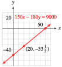

Section 1.1 Linear Models
¶Investigation 1.1.1. Sales on Commission.
Delbert is offered a part-time job selling restaurant equipment. He will be paid $1000 per month plus a 6% commission on his sales. The sales manager tells Delbert he can expect to sell about $8000 worth of equipment per month. To help him decide whether to accept the job, Delbert does a few calculations.
Based on the sales manager’s estimate, what monthly income can Delbert expect from this job? What annual salary would that provide?
-
What would Delbert’s monthly salary be if he sold only $5000 of equipment per month? What would his salary be if he sold $10,000 worth per month? Compute monthly incomes for each sales total shown in the table.
Sales Income 5000 8000 10,000 12,000 15,000 18,000 20,000 25,000 30,000 35,000 
Plot your data points on a graph, using sales, \(S\text{,}\) on the horizontal axis and income, \(I\text{,}\) on the vertical axis, as shown in the figure. Connect the data points to show Delbert’s monthly income for all possible monthly sales totals.
Add two new data points to the table by reading values from your graph.
-
Write an algebraic expression for Delbert’s monthly income, \(I\text{,}\) in terms of his monthly sales, \(S\text{.}\) Use the description in the problem to help you:
He will be paid: $1000 . . . plus a 6% commission on his sales.
Income \(= \underline{\hspace{6.818181818181818em}}\)
Test your formula from part (5) to see if it gives the same results as those you recorded in the table.
Use your formula to find out what monthly sales total Delbert would need in order to have a monthly income of $2500.
Each increase of $1000 in monthly sales increases Delbert’s monthly income by .
Summarize the results of your work: In your own words, describe the relationship between Delbert’s monthly sales and his monthly income. Include in your discussion a description of your graph.
Subsection 1.1.1 Tables, Graphs and Equations
The first step in creating a model is to describe relationships between variables. In Investigation 1.1.1, we analyzed the relationship between Delbert's sales and his income. Starting from a verbal description, we represented the relationship in three different ways.
A table of values displays specific data points with precise numerical values.
A graph is a visual display of the data. It is easier to spot trends and describe the overall behavior of the variables from a graph.
An algebraic equation is a compact summary of the model. It can be used to analyze the model and to make predictions
We begin our study of modeling with some examples of linear models. In the examples that follow, observe the interplay among the three modeling tools, and how each contributes to the model.
Example 1.1.1.
Annelise is on vacation at a seaside resort. She can rent a bicycle from her hotel for $3 an hour, plus a $5 insurance fee. (A fraction of an hour is charged as the same fraction of $3.)
Make a table of values showing the cost, \(C\text{,}\) of renting a bike for various lengths of time, \(t\text{.}\)
Plot the points on a graph. Draw a curve through the data points.
Write an equation for \(C\) in terms of \(t\text{.}\)
-
To find the cost, we multiply the time by $3, and add the result to the $5 insurance fee. For example, the cost of a 1-hour bike ride is
\begin{align*} \text{Cost}\amp=(\$5\text{ insurance fee})+(\$3\text{ per hour})\times(\alert{1}\text{ hour})\\ C\amp=5+3(\alert{1})=8 \end{align*}A 1-hour bike ride costs $8. We record the results in a table, as shown here:
Length of rental (hours) Cost of rental (dollars) \((t,C)\) \(1\) \(8\) \(C=5+3(\alert{1})\) \((1,8)\) \(2\) \(11\) \(C=5+3(\alert{2})\) \((2,11)\) \(3\) \(14\) \(C=5+3(\alert{3})\) \((3,14)\) Each pair of values represents a point on the graph. The first value gives the horizontal coordinate of the point, and the second value gives the vertical coordinate. The points lie on a straight line, as shown in the figure. The line extends infinitely in only one direction, because negative values of \(t\) do not make sense here.

-
To write an equation, we let \(C\) represent the cost of the rental, and we use \(t\) for the number of hours:
\begin{align*} \text{Cost}\amp=(\$5\text{ insurance fee})+(\$3\text{ per hour})\times\text{(number of hours)}\\ C\amp=5+3\cdot t \end{align*}
Example 1.1.2.
Use the equation \(C=5+3\cdot t\) you found in Example 1.1.1 to answer the following questions. Then show how to find the answers by using the graph.
How much will it cost Annelise to rent a bicycle for 6 hours?
How long can Annelise bicycle for $18.50?
-
We substitute \(t=\alert{6}\) into the expression for \(C\) to find
\begin{equation*} C=5+3(\alert{6})=23 \end{equation*}A 6-hour bike ride will cost $23. The point \(P\) on the graph in the figure represents the cost of a 6-hour bike ride. The value on the \(C\)-axis at the same height as point \(P\) is 23, so a 6-hour bike ride costs $23.
We substitute \(C=\alert{18.50}\) into the equation and solve for \(t\text{.}\)
\begin{align*} \alert{18.50}\amp=5+3t\\ 13.50\amp=3t\\ t\amp=4.5 \end{align*}For $18.50 Annelise can bicycle for 4½ hours. The point \(Q\) on the graph represents an $18.50 bike ride. The value on the \(t\)-axis below point \(Q\) is 4.5, so $18.50 will buy a 4.5 hour bike ride.
Note 1.1.3.
In Example 1.1.2, notice the different algebraic techniques we used in parts (a) and (b).
In part (a), we were given a value of \(t\) and we evaluated the expression \(5+3t\) to find \(C\text{.}\)
In part (b) we were given a value of \(C\) and we solved the equation \(C=5+3t\) to find \(t\text{.}\)
Checkpoint 1.1.4.
Frank plants a dozen corn seedlings, each 6 inches tall. With plenty of water and sunlight they will grow approximately 2 inches per day. Complete the table of values for the height, \(h\text{,}\) of the seedlings after \(t\) days.
| \(t\) | \(0\) | \(5\) | \(10\) | \(15\) | \(20\) |
| \(h\) |
Write an equation for the height of the seedlings in terms of the number of days since they were planted.
Graph the equation.
\(h = 6 + 2t\)

Checkpoint 1.1.5.
Use your equation from Checkpoint 1.1.4 to answer the questions. Illustrate each answer on the graph.
How tall is the corn after 3 weeks?
How long will it be before the corn is 6 feet tall?
Subsection 1.1.2 Choosing Scales for the Axes
To create a useful graph, we must choose appropriate scales for the axes.
The axes must extend far enough to show the values of the variables.
The tick marks should be equally spaced.
Usually we should use no more than 10 or 15 tick marks.
Example 1.1.6.
In 1990, the median price of a home in the US was $92,000. The median price increased by about $4700 per year over the next decade.
Make a table of values showing the median price of a house in 1990, 1994, 1998, and 2000.
Choose suitable scales for the axes and plot the values you found in part (a) on a graph. Use \(t\text{,}\) the number of years since 1990, on the horizontal axis and the price of the house, \(P\text{,}\) on the vertical axis. Draw a curve through the points.
Write an equation that expresses \(P\) in terms of \(t\text{.}\)
How much did the price of the house increase from 1990 to 1996? Illustrate the increase on your graph.
-
In 1990 the median price was $92,000. Four years later, in 1994, the price had increased by \(\alert{4}(4700)=18,800\) dollars, so
\begin{equation*} P=92,000+\alert{4}(4700)=110,800 \end{equation*}In 1998 the price had increased by \(\alert{8}(4700)=37,600\) dollars, so
\begin{equation*} P=92,000+\alert{8}(4700)=129,600 \end{equation*}You can verify the price of the house in 2000 by a similar calculation.
Year Price of House) \((t,P)\) \(1990\) \(92,000\) \((0,\, 92,000)\) \(1994\) \(110,800\) \((4,\, 110,800)\) \(1998\) \(129,600\) \((8,\, 129,600)\) \(2000\) \(139,000\) \((10,\, 139,000)\) -
We let \(t\) stand for the number of years since 1990, so that \(t=0\) in 1990, \(t=4\) in 1994, and so on. To choose scales for the axes, we look at the values in the table. For this graph we scale the horizontal axis, or \(t\)-axis, in 1-year intervals and the vertical axis, or \(P\)-axis, for $90,000 to $140,000 in intervals of $5,000. The points lie on a straight line, as shown in the figure.

-
Look back at the calculations in part (a). The price of the house started at $92,000 in 1990 and increased by \(t \times 4700\) dollars after \(t\) years. Thus,
\begin{equation*} P=92,000+4700t \end{equation*} -
We find the points on the graph for 1990 and 1996. These points lie above \(t=0\) and \(t=6\) on the \(t\)-axis. Next we find the values on the \(P\)-axis corresponding to the two points. The values are \(P=92,000\) in 1990 and \(P=120,200\) in 1996. The increase in price is the difference of the two \(P\)-values.
\begin{align*} \text{increase in price}\amp=120,200-92,000\\ \amp=28,200 \end{align*}The price of the home increased $28,200 between 1990 and 1996. This increase is indicated by the arrows in the figure.
Note 1.1.7.
The graphs in the preceding examples are increasing graphs . As we move along the graph from left to right (in the direction of increasing \(t\) ), the second coordinate increases as well. Try Checkpoint 1.1.8, which illustrates a decreasing graph.
Checkpoint 1.1.8.
Silver Lake has been polluted by industrial waste products. The concentration of toxic chemicals in the water is currently 285 parts per million (ppm). Environmental officials would like to reduce the concentration by 15 ppm each year.
-
Complete the table of values showing the desired concentration, \(C,\) of toxic chemicals \(t\) years from now. For each \(t\)-value, calculate the corresponding value for \(C\text{.}\) Write your answers as ordered pairs.
\(t\) \(C\) \((t,C)\) \(0\) \(C=285-15(\alert{0})\) \((0, ~~~~ )\) \(5\) \(C=285-15(\alert{5})\) \((5, ~~~~ )\) \(10\) \(C=285-15(\alert{10})\) \((10, ~~~~ )\) \(15\) \(C=285-15(\alert{15})\) \((15, ~~~~ )\) -
To choose scales for the axes, notice that the value of \(C\) starts at 285 and decreases from there. We'll scale the vertical axis up to 300, and use 10 tick marks at intervals of 30. Graph the ordered pairs on the grid, and connect them with a straight line. Extend the graph until it reaches the horizontal axis, but no farther. Points with negative \(C\)-coordinates have no meaning for the problem.
Write an equation for the concentration, \(C\text{,}\) of toxic chemicals \(t\) years from now.

Note 1.1.9.
In the previous Checkpoint, we extend the graph until it reaches the horizontal axis, but no farther. Points with negative \(C\)-coordinates have no meaning for the problem.
Technology 1.1.10. Graphing an Equation.
We can use a graphing calculator to graph an equation. On most calculators, we follow three steps.
To Graph an Equation:
Press
Y=and enter the equation you wish to graph.Press
WINDOWand select a suitable graphing window.Press
GRAPH
Example 1.1.11. Using a Graphing Calculator.
In Example 1.1.6, we found the equation
for the median price of a house \(t\) years after 1990. Graph this equation on a calculator.
To begin, we press Y= and enter
For this graph, we’ll use the grid in Example 1.1.6 for our window settings, so we press WINDOW and enter
| Xmin\(=0\) | Xmax\(=10\) | |
| Ymin\(=90,000\) | Ymax\(=140,000\) |
Finally, we press GRAPH. The calculator's graph is shown in the figure.

Checkpoint 1.1.12.
Solve the equation \(2y - 1575 = 45x\) for \(y\) in terms of \(x\text{.}\)
-
Graph the equation on a graphing calculator. Use the window
Xmin\(=-50\) Xmax\(=50\) Xscl\(=5\) Ymin\(=-500\) Ymax\(=1000\) Yscl\(=100\) Sketch the graph on paper. Use the window settings to choose appropriate scales for the axes.
\(y = (1575 + 45x)/ 2 \)


Subsection 1.1.3 Linear Equations
All the models in the preceding examples have equations with a similar form:
(We'll talk more about rate of change in Section 1.4.) Their graphs were all portions of straight lines. For this reason such equations are called linear equations. The order of the terms in the equation does not matter. For example, the equation in Example 1.1.1,
can be written equivalently as
and the equation in Example 1.1.6,
can be written as
This form of a linear equation, \(Ax+By=C \text{,}\) is called the general form.
General Form for a Linear Equation.
The graph of any equation
where \(A\) and \(B\) are not both equal to zero, is a straight line.
Example 1.1.13.
The manager at Albert's Appliances has $3000 to spend on advertising for the next fiscal quarter. A 30-second spot on television costs $150 per broadcast, and a 30-second radio ad costs $50.
The manager decides to buy \(x\) television ads and \(y\) radio ads. Write an equation relating \(x\) and \(y\text{.}\)
Make a table of values showing several choices for \(x\) and \(y\text{.}\)
Plot the points from your table, and graph the equation.
-
Each television ad costs $150, so \(x\) ads will cost $\(150x\text{.}\) Similarly, \(y\) radio ads will cost $\(50y\text{.}\) The manager has $3000 to spend, so the sum of the costs must be $3000. Thus,
\begin{equation*} 150x+50y=3000 \end{equation*} -
We choose some values of \(x\text{,}\) and solve the equation for the corresponding value of \(y\text{.}\) For example, if \(x=\alert{10}\) then
\begin{align*} 150(\alert{10})+50y\amp=300\\ 1500+50y\amp=3000\\ 50y\amp=1500\\ y\amp=30 \end{align*}If the manager buys 10 television ads, she can also buy 30 radio ads. You can verify the other entries in the table.
\(x\) \(8\) \(10\) \(12\) \(14\) \(y\) \(36\) \(30\) \(24\) \(18\) We plot the points from the table. All the solutions lie on a straight line, as shown in the figure.
Checkpoint 1.1.14.
In central Nebraska, each acre of corn requires 25 acre-inches of water per year, and each acre of winter wheat requires 18 acre-inches of water. (An acre-inch is the amount of water needed to cover one acre of land to a depth of one inch.) A farmer can count on 9000 acre-inches of water for the coming year. (Source: Institute of Agriculture and Natural Resources, University of Nebraska)
Write an equation relating the number of acres of corn, \(x\text{,}\) and the number of acres of wheat, \(y\text{,}\) that the farmer can plant.
-
Complete the table.
\(x\) \(50\) \(100\) \(150\) \(200\) \(y\) \(\hphantom{0000}\) \(\hphantom{0000}\) \(\hphantom{0000}\) \(\hphantom{0000}\)
\(25x + 18y = 9000\)
\(x\) \(50\) \(100\) \(150\) \(200\) \(y\) \(430.6\) \(361.1\) \(291.7\) \(222.2\)
Subsection 1.1.4 Intercepts
Consider the graph of the equation
shown at left. The points where the graph crosses the axes are called the intercepts of the graph. The coordinates of these points are easy to find.
The \(y\)-coordinate of the \(x\)-intercept is zero, so we set \(y=\alert{0}\) in the equation to get
The \(x\)-intercept is the point \((-3,0)\text{.}\) Also, the \(x\)-coordinate of the \(y\)-intercept is zero, so we set \(x=\alert{0}\) in the equation to get
The \(y\)-intercept is \((0,4)\text{.}\)
Intercepts of a Graph.
The points where a graph crosses the axes are called the intercepts of the graph.
To find the \(y\)-intercept, set \(x=0\) and solve for \(y\text{.}\)
To find the \(x\)-intercept, set \(y=0\) and solve for \(x\)
The intercepts of a graph tell us something about the situation it models.
Example 1.1.15.
- Find the intercepts of the graph in Checkpoint 1.1.8, about the pollution in Silver Lake.
- What do the intercepts tell us about the problem?
-
An equation for the concentration of toxic chemicals is
\begin{equation*} C=285-15t \end{equation*}To find the \(C\)-intercept, set \(t\) equal to zero.
\begin{equation*} C=285-15(\alert{0})=285 \end{equation*}The \(C\)-intercept is the point \((0, 285)\text{,}\) or simply 285.
To find the \(t\)-intercept, set \(C\) equal to zero and solve for \(t\text{.}\)
\begin{equation*} \begin{aligned}[t] \alert{0}\amp =285-15t \amp \amp \blert{\text{Add }15t \text{ to both sides.}}\\ 15t\amp =285 \amp \amp \blert{\text{Divide both sides by 15.}}\\ t\amp =19 \end{aligned} \end{equation*}The \(t\)-intercept is the point \((19,0)\text{,}\) or simply \(19\text{.}\)
-
The \(C\)-intercept represents the concentration of toxic chemicals in Silver Lake now: When \(t=0\text{,}\) \(C=285\text{,}\) so the concentration is currently \(285\) ppm.
The \(t\)-intercept represents the number of years it will take for the concentration of toxic chemicals to drop to zero: When \(C=0\text{,}\) \(t=19\text{,}\) so it will take \(19\) years for the pollution to be eliminated entirely.
Checkpoint 1.1.16.
Find the intercepts of the graph in Example 1.1.13, about the advertising budget for Albert's Appliances: \(150x + 50y = 3000\text{.}\)
What do the intercepts tell us about the problem?
\((20, 0)\text{:}\) The manager can buy \(20\) television ads if she buys no radio ads. \((0, 60)\text{:}\) The manager can buy \(60\) radio ads if she buys no television ads.
Subsection 1.1.5 Intercept Method for Graphing Lines
Because we really only need two points to graph a linear equation, we might as well find the intercepts first and use them to draw the graph. The values of the intercepts will also help us choose suitable scales for the axes. It is always a good idea to find a third point as a check.
Example 1.1.17.
Find the \(x\)- and \(y\)-intercepts of the graph of \(150x - 180y = 9000\text{.}\)
Use the intercepts to graph the equation. Find a third point as a check.
-
To find the \(x\)-intercept, we set \(y = \alert{0}\text{.}\)
\begin{equation*} \begin{aligned}[t] 150x-18(\alert{0})\amp =9000 \amp \amp \blert{\text{Simpify.}}\\ 150x\amp =9000 \amp \amp \blert{\text{Divide both sides by 150.}}\\ x\amp =60 \amp \amp \end{aligned} \end{equation*}The \(x\)-intercept is the point \((60, 0)\text{.}\) To find the \(y\)-intercept, we set \(x = \alert{0}\text{.}\)
\begin{equation*} \begin{aligned}[t] 150(\alert{0})-18y\amp =9000 \amp \amp \blert{\text{Simpify.}}\\ -180y\amp =9000 \amp \amp \blert{\text{Divide both sides by } -180\text{.}}\\ y\amp =-50 \amp \amp \end{aligned} \end{equation*}The \(y\)-intercept is the point \((0, -50)\text{.}\)
-
We scale both axes in intervals of 10 and then plot the two intercepts, \((60, 0)\) and \((0, -50)\text{.}\) We draw the line through them, as shown below. Finally, we find another point and check that it lies on this line. We choose \(x = \alert{20}\) and solve for \(y\text{.}\)
\begin{align*} 150(\alert{20}) -180y \amp = 9000\\ 3000 -180y \amp = 9000\\ -180y \amp = 6000\\ y \amp =-33.\overline{3} \end{align*}We plot the point \((20, -33\frac{1}{3})\text{.}\) Because this point lies on the line, we can be reasonably confident that our graph is correct.

Technology 1.1.18. Choosing a Graphing Window.
Knowing the intercepts can also help us choose a suitable window on a graphing calculator. We would like the window to be large enough to show the intercepts. For the graph in the example above, we can enter the equation
in the window
| Xmin\(=-20\) | Xmax\(=70\) | |
| Ymin\(=-70\) | Ymax\(=30\) |
To Graph a Line Using the Intercept Method:.
-
Find the intercepts of the line.
To find the \(x\)-intercept, set \(y=0\) and solve for \(x\text{.}\)
To find the \(y\)-intercept, set \(x=0\) and solve for \(y\text{.}\)
Plot the intercepts.
Choose a value for \(x\) and find a third point on the line.
Draw a line through the points.
Checkpoint 1.1.19.
In Checkpoint 1.1.14, you wrote an equation about crops in Nebraska. Find the intercepts of the graph.
Use the intercepts to help you choose appropriate scales for the axes, and then graph the equation.
What do the intercepts tell us about the problem?
a., c. \(~~(360, 0)\text{:}\) If he plants no wheat, the farmer can plant \(360\) acres of corn. \((0, 500)\text{:}\) If he plants no corn, the farmer can plant 500 acres of wheat.
b.

Note 1.1.20.
The examples in this section model simple linear relationships between two variables. Such relationships, in which the value of one variable is determined by the value of the other, are called functions. We will study various kinds of functions throughout the course.
Subsection 1.1.6 Section Summary
¶Subsubsection 1.1.6.1 Vocabulary
Look up the definitions of new terms in the Glossary.
Variable
Solve an equation
Evaluate an expression
Linear equation
Increasing graph
Decreasing graph
Intercept
Mathematical model
Subsubsection 1.1.6.2 CONCEPTS
We can describe a relationship between variables with a table of values, a graph, or an equation.
-
Linear models have equations of the following form:
\begin{equation*} y = (\text{starting value}) + (\text{rate of change})\cdot x \end{equation*} To make a useful graph, we must choose appropriate scales for the axes.
General Form for a Linear Equation.
The graph of any equation
\begin{equation*} Ax+By=C \end{equation*}where \(A\) and \(B\) are not both equal to zero, is a straight line.
The intercepts of a graph are the points where the graph crosses the axes.
-
We can use the intercepts to graph a line.
To Graph a Line Using the Intercept Method:.
-
Find the intercepts of the line.
To find the \(x\)-intercept, set \(y=0\) and solve for \(x\text{.}\)
To find the \(y\)-intercept, set \(x=0\) and solve for \(y\text{.}\)
Plot the intercepts.
Choose a value for \(x\) and find a third point on the line.
Draw a line through the points.
-
The intercepts are also useful for interpreting a model.
Subsubsection 1.1.6.3 STUDY QUESTIONS
Name three ways to represent a relationship between two variables.
If \(C\) is expressed in terms of \(H\text{,}\) which variable goes on the horizontal axis?
Explain the difference between evaluating an expression and solving an equation.
How many points do you need to graph a linear equation?
Explain how the words intercept and intersect are related; explain how they are different.
Delbert says that the intercepts of the line \(3x + 5y = 30\) are \((10, 6)\text{.}\) What is wrong with his answer?
Subsubsection 1.1.6.4 SKILLS
Practice each skill in the Homework 1.8 problems listed.
Make a table of values: #1–4, 7 and 8
Plot points and draw a graph: #1–4, 7 and 8
Choose appropriate scales for the axes: #5–12
Write a linear model of the form \(y = (\text{starting value}) + (\text{rate of change})\cdot x\text{:}\) #1–8
Write a linear model in general form: #25–28, 33–36
Evaluate a linear expression, algebraically and graphically: #1–4
Solve a linear equation, algebraically and graphically: #1–4
Find the intercepts of a graph: #5 and 6, 13–24, 45–52
Graph a line by the intercept method: #5 and 6, 13–24
Interpret the meaning of the intercepts: #5 and 6, 25–28
Use a graphing calculator to graph a line: #37–52
Sketch on paper a graph obtained on a calculator: #37–44